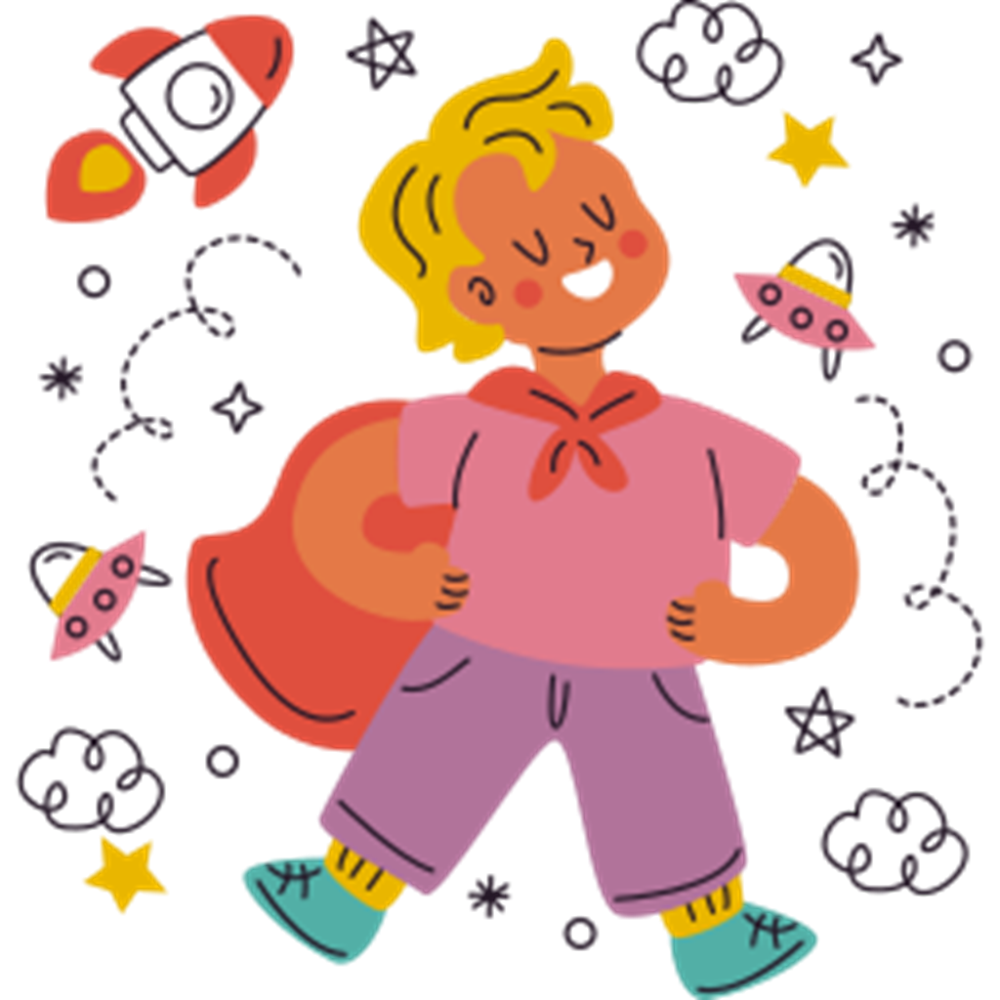

КОРОТКА ІСТОРІЯ ПРО САДОК
Пані Калина
ЗАГАЛЬНА ІНФОРМАЦІЯ
Про дитячий садок Baby
Ми створили простір, у якому дітям цікаво, безпечно й затишно. У нашому садку малюки грають, пізнають світ, розвивають фантазію й вчаться дружити. Професійні вихователі піклуються про кожну дитину, допомагаючи розкрити її здібності. Щодня відбуваються творчі заняття, музика, рухливі ігри та прогулянки на свіжому повітрі. Збалансоване харчування й комфортні умови роблять перебування у садочку приємним і корисним. Наш садок - це другий дім, де діти ростуть щасливими, добрими та впевненими у собі.

Наш підхід
до виховання
Філософія, цінності, атмосфера турботи й поваги до кожної дитини
Розвиток і навчання
для малюків
Як організовані заняття, які методики використовуються, чому дітям цікаво вчитися через гру
Творчість і дозвілля
для малюків
Малювання, музика, театральні ігри, тематичні дні, майстерки
Харчування
з власним поварем
Приклади меню, принципи здорового раціону, як враховуються індивідуальні потреби дітей
Рух і спорт
для малюків
Фізичні вправи, ранкова гімнастика, прогулянки, танці, активні ігри
Розклад дня
у садочку
Ігри, заняття, прогулянки, сон, харчування, відпочинок
205
Щасливих дітей
45
Турботливих педагогів
365
Днів радості на рік
1000000
Усмішок щодня
Як ви допомагаєте дітям адаптуватися до садка?
Ми проводимо адаптаційні дні з коротшими відвідуваннями, залучаємо батьків, створюємо теплу атмосферу та підтримуємо кожну дитину з перших днів
Чи можна відвідувати садок неповний день?
Так, передбачені гнучкі формати: півдня, короткий день або повний — залежно від потреб родини
Які додаткові заняття пропонуються?
Окрім основної програми, діти можуть відвідувати англійську, хореографію, малювання, логопеда, заняття з психологом і спортивні гуртки
Надішліть нам Вашу заявку
Наш садок — це другий дім, де малюки ростуть упевненими, добрими й щасливими